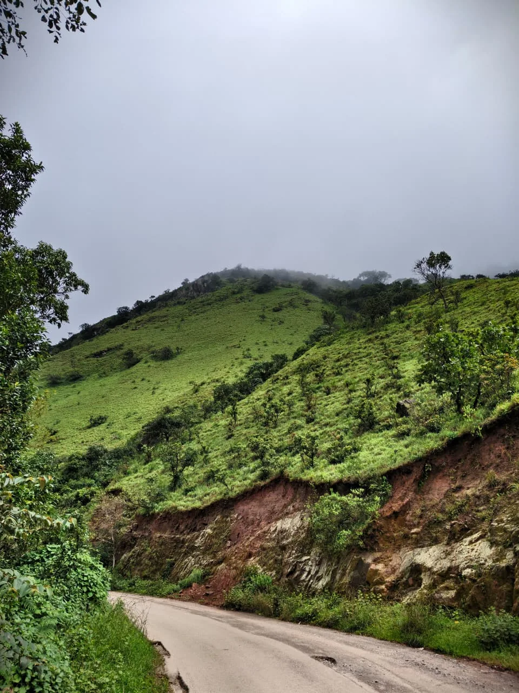

A thoughtful visit.
A shared landscape.
Visitor information for planning your time at Nechekattu Farm.
Enquiries and confirmation
Preparing or sending an enquiry does not confirm a booking. Please obtain confirmation, exact arrival directions, any applicable fees and the current farm schedule directly from the farm team before travelling. Opening hours and visitor fees have not been provided on this website.
Seasonal activities
Activities depend on crop conditions, weather, access and daily farm operations. The indicative coffee harvest season is November–January. Harvesting, processing, drying demonstrations and wildlife sightings are never guaranteed.
On the farm
Follow the team’s directions, stay on approved routes and ask before picking crops or photographing people. Wear shoes with good grip, bring drinking water and take your litter away. The farm and trails are smoke-free and alcohol-free. Avoid disturbing wildlife and do not play bird calls or music.
Planning for your group
Tell the team about children, mobility needs or a preference for easier terrain before arranging a visit. The team can advise on current conditions and suitable routes.
Photography and information
Website images are illustrative regional, crop and species photographs. They do not document the farm, identify its coffee varieties or establish wildlife occurrence. Refer to photography credits for image authors and licences. Farm-specific content is based on the information supplied by the owner and should be kept current.